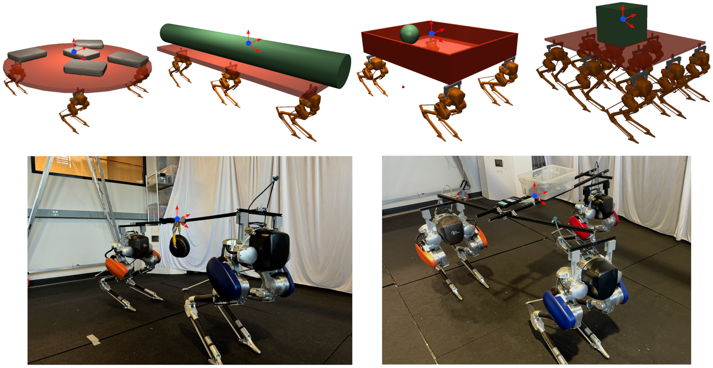
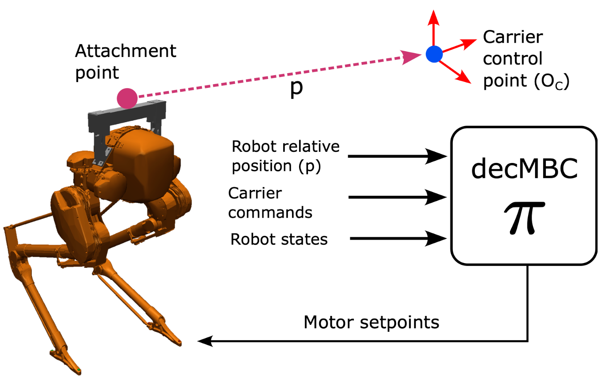

Learning Decentralized Multi-Biped Control for Payload Transport
Accepted at CoRL 2025
Abstract
Payload transport over flat terrain via multi-wheel robot carriers is well-understood, highly effective, and configurable. In this paper, our goal is to provide similar effectiveness and configurability for transport over rough terrain that is more suitable for legs rather than wheels. For this purpose, we consider multi-biped robot carriers, where wheels are replaced by multiple bipedal robots attached to the carrier. Our main contribution is to design a decentralized controller for such systems that can be effectively applied to varying numbers and configurations of rigidly attached bipedal robots without retraining. We present a reinforcement learning approach for training the controller in simulation that supports transfer to the real world. Our experiments in simulation provide quantitative metrics showing the effectiveness of the approach over a wide variety of simulated transport scenarios. In addition, we demonstrate the controller in the real-world for systems composed of two and three Cassie robots. To our knowledge, this is the first example of a scalable multi-biped payload transport system.
Our goal
Our goal is to transport a payload using an arbitrary carrier, which can be commanded about any control point on the carrier.

Our approach
We design a decentralized Multi-Biped Controller (decMBC) where:
- Each robot independently maneuvers the carrier.
- There is no inter-communication between robots.
- Each robot is aware only of its relative position with respect to the control point.
- The same policy can be deployed across any number of robots.

Simulation Training
We train with limited carrier configurations (upto 3 robots) simultaneously by varying carrier control point, robots' relative position, carrier / payload masses.
Simulation Testing
Varying Loads and Configurations
We test our policy across variety of carrier configurations, with arbitrary number of robots, and various carrier and payload weights.
Simulation Testing
Challenging Terrain
With additional training on additional terrain types, including stairs, bumps, slopes, and dynamic obstacles, the controller is able traverse a range of challenging terrains. Note that the robots are blind and use only proprioceptive sensory input. Nevertheless they can collectively react to terrain disturbances and collectively recover from instabilities of individual robots.
Real hardware Testing
Testing maneuverability
We test our policy on real robots where same policy is deployed to each of the three robots. We demonstrate maneuverability of the carrier by commanding the carrier to follow different user commands.
Testing robustness to disturbances
We also test the robustness of our policy against disturbances by applying external forces to the carrier. Here, we deploy the same policy to each of the two robots.
More hardware tests!
We test our policy for two and three robots with various carrier, attachment points for robots, and payload weights.
BibTeX
@inproceedings{pandit2025decmbc,
author = {Pandit, Bikram and Gupta, Ashutosh and Gadde, Mohitvishnu S. and Johnson, Addison and Duan, Helei and Dao, Jeremy and Shrestha, Aayam Kumar and Fern, Alan},
title = {Learning Decentralized Multi-Biped Control for Payload Transport},
booktitle = {Conference on Robot Learning (CoRL)},
year = {2025}
}